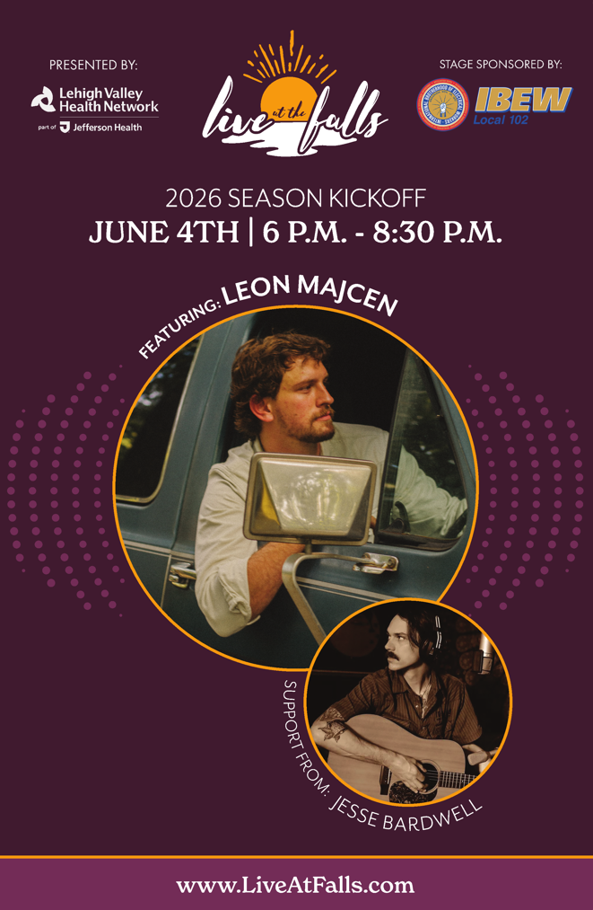

Live at the Falls · 2026 Season
Thursdays · Scott Park Stage, Easton · presented by the Greater Easton Development Partnership
Presented by Lehigh Valley Health Network (Jefferson Health) · Stage sponsored by IBEW Local 102 · LiveAtFalls.com
🔁 Two-sided flywheel. Every act gets a real ticket the day the lineup posts — claimed or not. Bands claim to own their pass; fans claim to attend. StageFill runs the season on the Scott Park map.